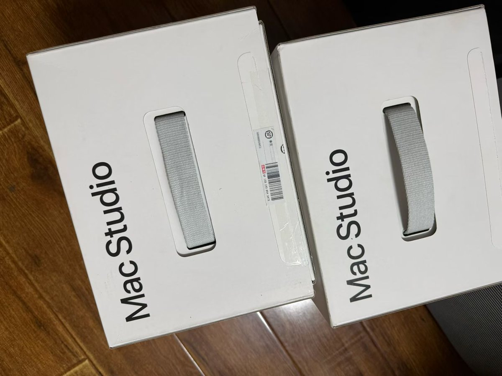
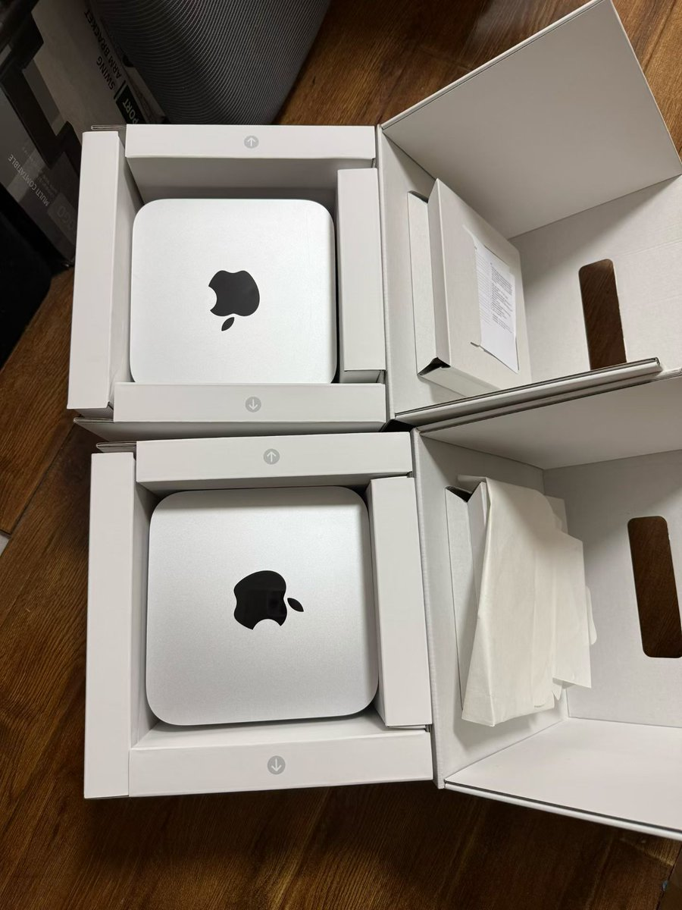
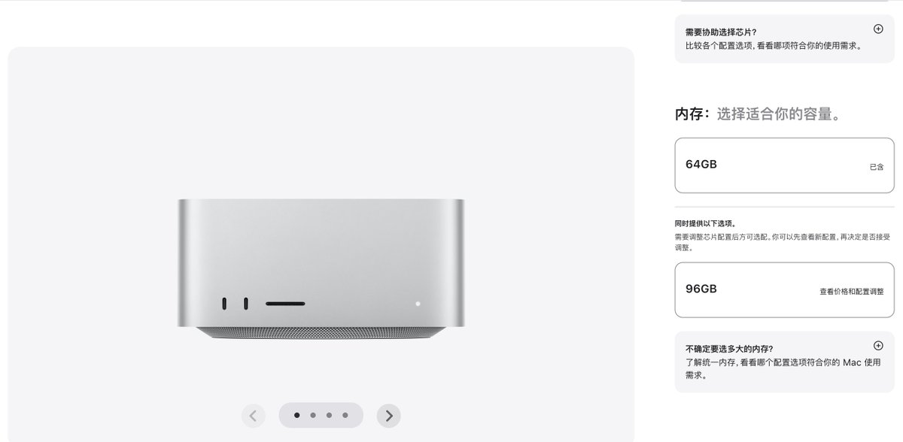

奶昔🥤
@realNyarime
@discountifu 在我这里😋😋😋



奶昔🥤
@realNyarime
最保值的电子产品应该是Mac Studio M3 Ultra 512+2T……
因为AI行业的需求，512G内存官方停产，价值翻倍一台十几万 真恐怖🫣 https://t.co/m4BkBGL53f
大梦想家迪士尼
@discountifu
为什么官网的 Mac 内存最大只有 96GB，以前 512 GB 的那个去哪儿了 🤔 https://t.co/gJc1BD4r0g